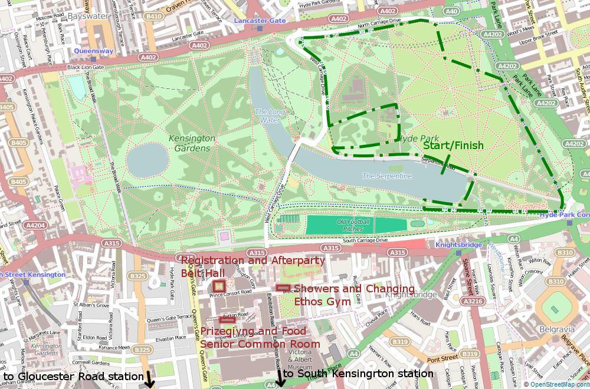
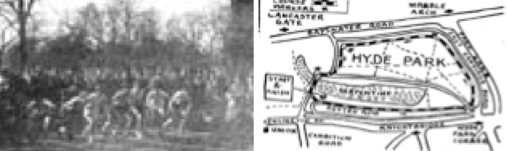

The Hyde Park Relays is a student relay race (organised by the Imperial College Cross Country & Athletics club) through Hyde Park. The race has been bringing together running clubs, societies and students from all over the UK Europe for 66 year!
This year we introduce electronic chip timing to make the event even bigger! We hope to welcome you on the 7th of February to Hyde Park for the 67th edition!
This year we bring a new 5k route for both the men and women’s teams. The route is already present on Strava. Can you steal the course record during your training?

The question of exactly which of three Imperial College students, Tony Watts, Robert (Bob) Gigg and Gordon Brown first thought of organising a relay race in nearby Hyde Park remains a subject of debate to this day. Nevertheless, between them and with the help of other cross-country club members, the idea grew into reality. Six London teams plus Reading, Southampton, Birmingham Universities and Northampton Engineering College were invited to Hyde Park for 2:30pm on Saturday 19th March, 1949.

Picture and route of the first Hyde Park Relay in 1949.
While those first teams ran 6 laps of a 2 mile and 1312 yard course, skirting round the edge of the park, the organisers couldn’t possibly have predicted that they had started a race which would gradually grow in popularity such that it would attract teams from all around Great Britain and from many European countries. It was perhaps fitting that Imperial College won that first event; their team consisted of David Stead, J.J. Billups, Jimmy Sadler, R. W. Freeman, Tony Watts and Bob Gigg, who also ran the fastest lap of the day (13:58).
Some famous names who ran, but didn't win...